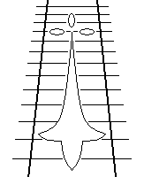

Le jeu de rôles de la Compagnie des Glaces
Britanny Network
Idée de scénario pour des joueurs expérimentés qu'il conviendrait d'approfondir. Les PNJ ne sont pas décrits et sont à créer.
| Déroulement du scénario |  | Documents pouvant être remis aux joueurs |
|---|---|---|